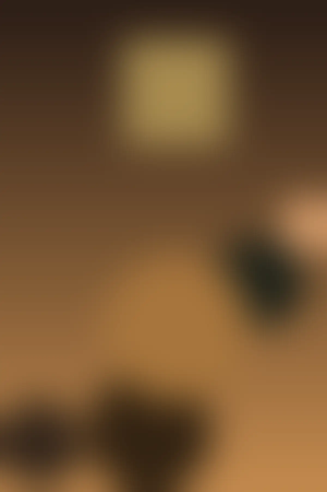
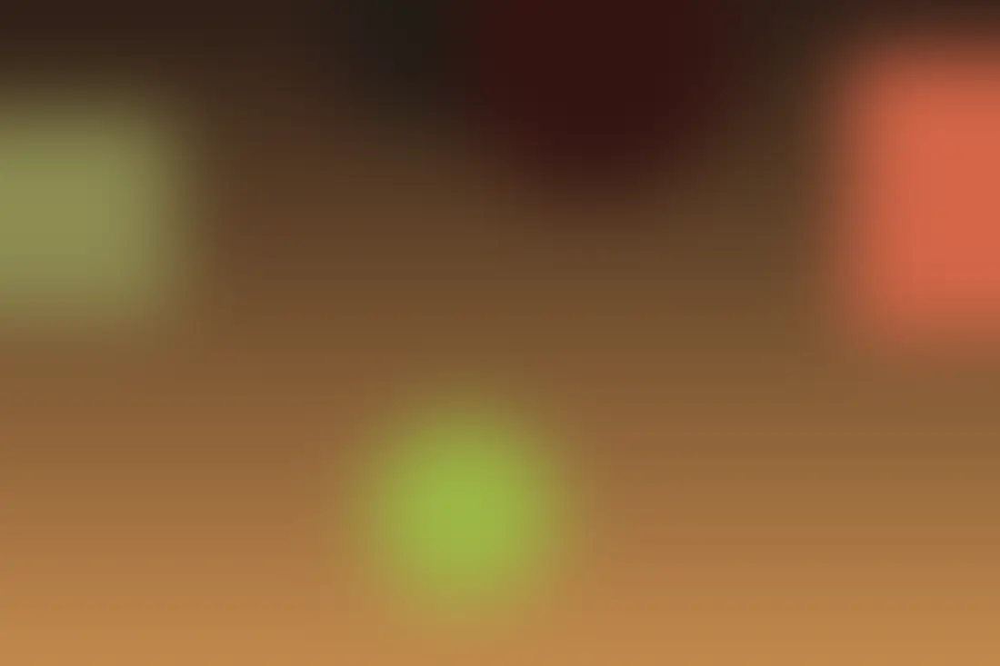
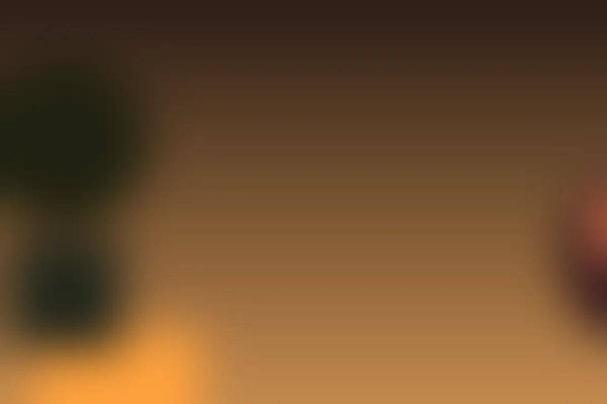
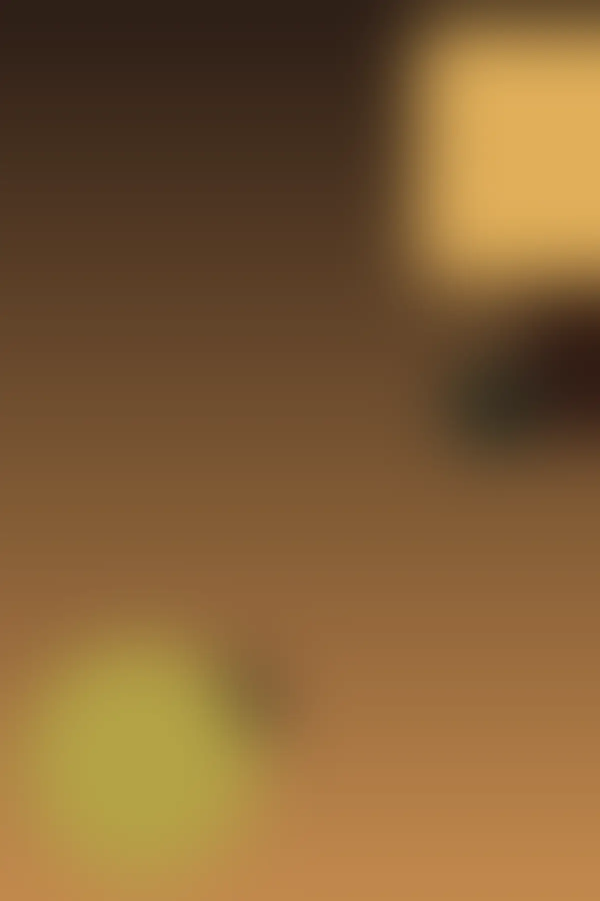
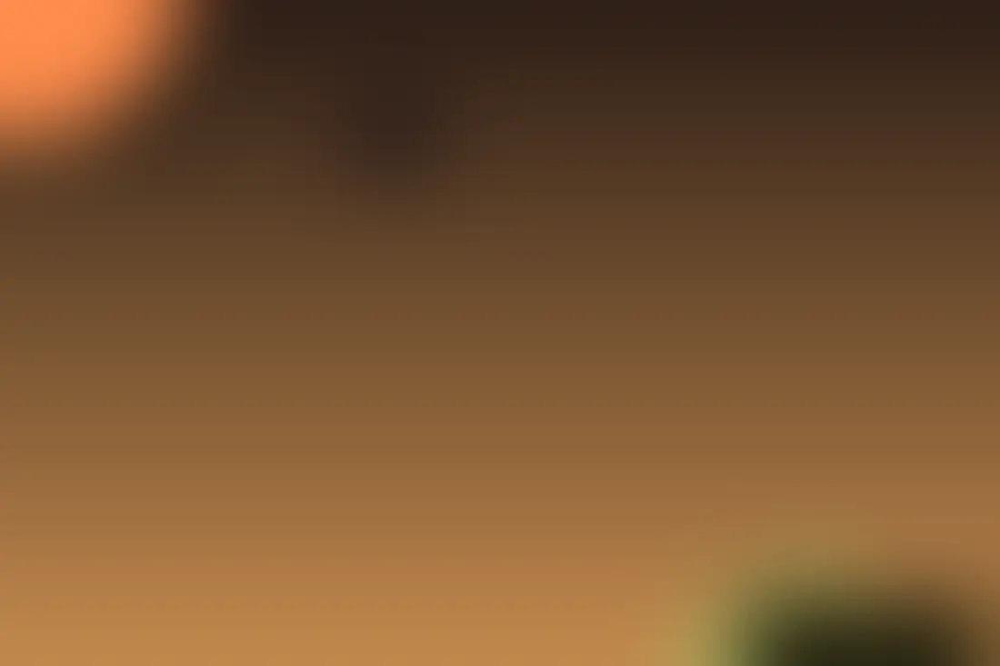

Mai puțină
grabă.
Mai multă
cafea.
Lasă orașul să aștepte puțin.
Următoarea ta pauză are o adresă: Orion, pe bulevard.

Orașul are ritmul lui.
Tu alege-ți pauza.
Un drum prin Constanța. O conversație care mai poate continua. Sau câteva minute numai pentru tine.
Orion este o cafenea pe Bulevardul Exemplului nr. 8. Un punct de întâlnire pentru următoarea ta pauză de cafea.
Fă loc unei pauze
O conversație.
O cafea.
Fără grabă.
Ce cafea ți se potrivește astăzi? Pentru sortimentele disponibile, meniul actual și prețuri, vorbește direct cu echipa Orion.
Întreabă despre meniuNu este disponibil un meniu oficial verificat online.
Starea de cafea.
O galerie de inspirație pentru următoarea pauză.
Imagini de stoc; nu prezintă locația Orion.






Ne vedem
pe bulevard.
Pornește spre Orion Adresa
Constanța, 900178, România
Telefon
0700 000 801Program
Luni – Duminică 07:30 – 17:00
Program orientativ; confirmă telefonic înainte de vizită, inclusiv în zilele de sărbătoare.
Despre informațiile de pe site
Proiect demonstrativ: cafeneaua, adresa și telefonul sunt fictive. Imaginile sunt grafică abstractă generată.
Ai câteva minute?
Hai la o cafea.